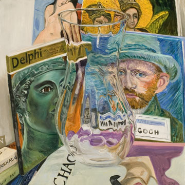

Trisha Orr
|
| Download artist portfolio > |
Art Papers Review, July-August 2006
Trisha Orr’s most recent work relies on optical distortion and fragmentation to reflect on daily life’s widely ranging seductions. The nineteen moderately sized oil paintings on view in Visions of Eden [Les Yeux du Monde; March 3-April 29, 2006] may initially seem rather conventional in medium and subject matter—still lifes of vases and art book covers. But surface is a complicated matter in Orr’s paintings. Her previous series have featured tumultuous, crowded still lifes of fabrics, flowers and oddly ornate objects in allover compositions that upend spatial orientation. Lush and intense, these works were suspended in a voluptuous calm—a result of the delicate tension between competing patterns, colors, textures, and images.
Her new paintings reach a higher degree of surface complication. Their groupings of books, with truncated titles and overlapping cover illustrations, give rise to an awareness of the seduction of books, of their ability to simultaneously comfort and pleasure their owners. The art books in her paintings suggest the ways in which individuals reach a consciousness of being through the gratifications of looking, repeatedly images and objects that echo and articulate their desires. Cultural critics often equate the manufacture of desire with the artificial construction and manipulation of the self. The opposite proposition is more rarely considered. Desire may also be a way to articulate a more authentically subjective self. The pleasure of looking is one of the ways in which that self identifies his or her needs.
Orr’s paintings are nothing like the kaleidoscopic seductions of MTV and VH1. She came of age as a painter in the last flourish of modernist art history, a period when women artists were still absent from the pages of Janson’s art historical primer and when high art and the eroticized female nude were still unabashedly romanticized. Oddly but fittingly, however, MTV and VH1 gave Orr one of the inspirations for this series. Their persistent assertion of fleeting, shifting image combinations embody competing desires. Orr perceived these as a parallel to the reproductions that, recurring in art history books, have signified her own evolving and revolving identifications—image of Van Gogh, of the Renaissance, Gothic, and Classical periods, of Asian art.
Orr’s compositions exploit the visual distortions of looking through cut glass. In each work, a crystal vase instills a central stillness—emptiness, expectancy perhaps- that both warps the images of books and crystallizes the painting’s nervous energy. The book covers’ deep color saturation mingles with dark crevices and linear demarcations to create intersections and conflations. Brightness and obscurity merge. Doors of Perception, 2004, presents a crossfire of gazes: the familiar gazes of a Van Gogh self-portrait, a charioteer of Delphi, an angelic female, and a sexualized woman meet and warp in the wave patterns created by the glass. Like Feynman’s famous two-slit experiment, which suggests multiple and variable states of being, the images of images that are the images of images in Orr’s paintings show the simultaneity of desire that meets, separates, and meets again through variations in time and experience.
— Dinah Ryan



| © 1995-2012 All Rights Reserved. Les Yeux du Monde |